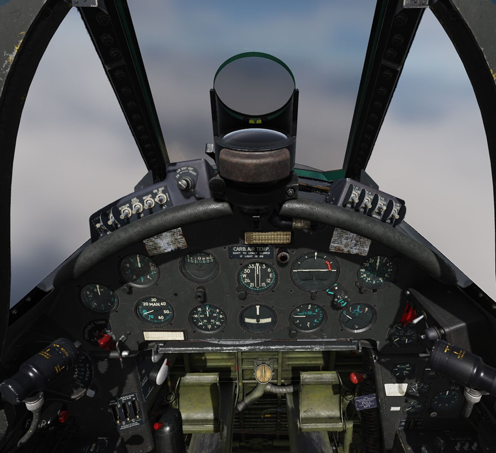

Chaque commande nommée et expliquée, planche par planche. À garder ouvert à côté du jeu pendant les premières heures : les leçons du Pas à pas renvoient ici dès qu'elles citent un interrupteur qu'on n'a pas encore vu.
Page de squelette — annotations à écrire
Les planches du manuel Magnitude 3 sont en place. Ce qui manque : le repérage numéroté de chaque commande sur l'image et le tableau qui va avec, sur le modèle du cockpit du F-14B(U). Les libellés devront reprendre la nomenclature du manuel AN-01-45MAG-3, pas une traduction improvisée.
Vue d'ensemble

Le poste vu de la place pilote — planche avant, viseur, manche.Original ↗
Planches extraites du manuel officiel Magnitude 3 AN-01-45MAG-3 et hébergées dans F4U1D/img/. La section A · Découverte & cockpit du cursus couvre déjà ces planches en détail — cette page en sera la version consultable en un coup d'œil.